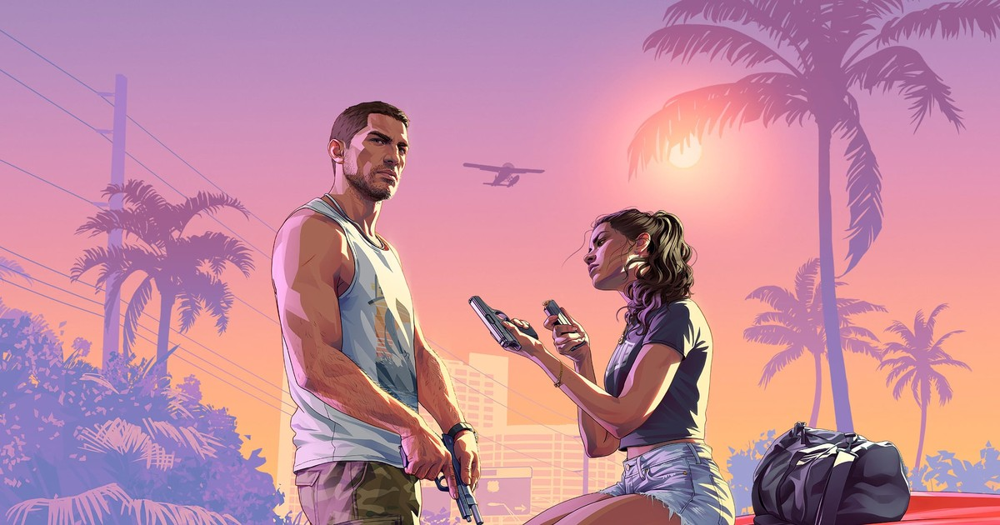

GTA 6 is booting on PC — menus running at 30 FPS, less than a day after Rockstar killed the biggest port project
Rockstar shut down Project Leonida overnight. By morning, other port projects had GTA 6's leaked Xbox build booting on Windows 11 — menus and settings at a steady 30 FPS. It is not playable, and nobody should download the files. But the race Rockstar tried to end is still running.

Disclosure: this post contains affiliate links. I earn a commission on qualifying purchases.
Rockstar killed the biggest unofficial GTA 6 PC port overnight — and by morning, the game was booting on PC anyway.
Less than a day after Project Leonida's Discord and GitHub went dark and its 15-year-old creator quit, other porting projects have picked up the leaked Xbox build and gotten further than Leonida ever did. The compatibility layer XCL now boots Grand Theft Auto VI on Windows 11 and runs its menus and settings at a steady 30 FPS, according to a live tracker following the porting scene. That is the furthest any unofficial effort has gotten — and it happened within hours of the takedown.
What actually boots
To be exact about what this is: the game starts, the menus load, and you can navigate the settings. It is not playable. No open world, no driving through Vice City, no missions — 3D gameplay is still blocked, with the tracker reporting the effort stalls on the game's mesh shader pipelines.
The footage behind these claims has not been independently verified, and at least one viral "GTA 6 running on PC" video from the last few days turned out to be a fake stitched together from GTA 5 footage. Treat every clip with caution — but the menus-booting claim is now reported by multiple outlets tracking the scene, not just a single social post.
The progress came fast because the pieces were already in place. Cyberleek released the missing Xbox executable on November 23, completing the leaked 209GB Xbox build. Within hours, footage appeared showing the game reaching its settings menu on a Windows PC, with in-game audio and then a black screen. XCL — a compatibility layer that translates Xbox Series games to run on Windows — then got the menus running at 30 FPS on a Windows 11 machine.
The takedown didn't stop the race — it scattered it
Leonida and RageForge, the 3D world viewer project, both closed their public GitHub repositories overnight. But the code had already spread: community forks carried it forward immediately, and other projects are now testing against the same leaked executable. That is the problem with shutting down an open-source project after its code is public: the takedown removes the most visible team, not the work. Rockstar and Take-Two have not commented publicly on the executable leak or the port projects, and Take-Two is reportedly pursuing Cyberleek through takedowns, subpoenas, and crypto wallet tracing. But every hour the race continues, more forks appear and more of the game's systems get translated.
Do not download the files
This needs saying plainly: there is no playable PC version of GTA 6, and there is no safe way to get one. The leaked files have not been independently authenticated. Downloading them is piracy, and files circulating from strangers carry real malware risk — the port tracker is already flagging fake GitHub repositories distributing malware under the guise of GTA 6 port tools. The projects themselves do not distribute the game's files; users are expected to supply their own, and the only source in circulation right now is the leak.
There is still no official PC version of GTA 6 announced and no confirmed release date. Reports have pointed to early 2027 — a much shorter wait than Rockstar's usual year-plus gap between console and PC, and a wait made shorter by the fact that the game has already sold 44.9 million copies in its first days. Until Rockstar announces a date, the unofficial race is the only PC story there is — and after last night, it is very much still running.
Sources: GTA 6 PC Emulator Status: KytyPS5, shadPS4 & Malware List (Pro-Gamer.gg) · GTA 6 on PC: Leaked Xbox Build Boots, But It's Not Playable Yet (JagoAmerica) · Unofficial GTA 6 PC Port Will Need Nearly 350 GB, and It Still Doesn't Boot (VGTimes) · Modders Got GTA 6 Booting on PC Overnight… (YouTube)
Watch
Source: Grand Theft Auto VI Launch Trailer (Rockstar Games) — the official launch trailer, released October 15, 2026, 90 seconds of in-game footage captured on PS5, set to Justice's "Flower in a Hurricane."
Gear up: Razer — mice, keyboards, headsets and laptops.